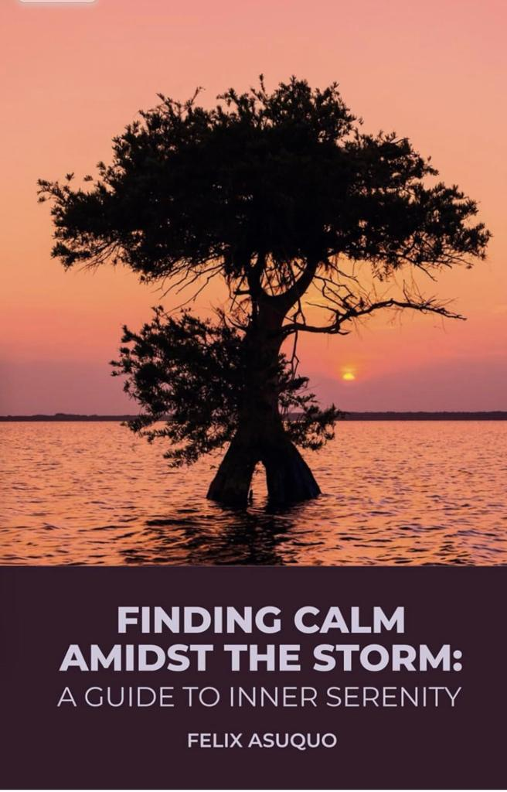
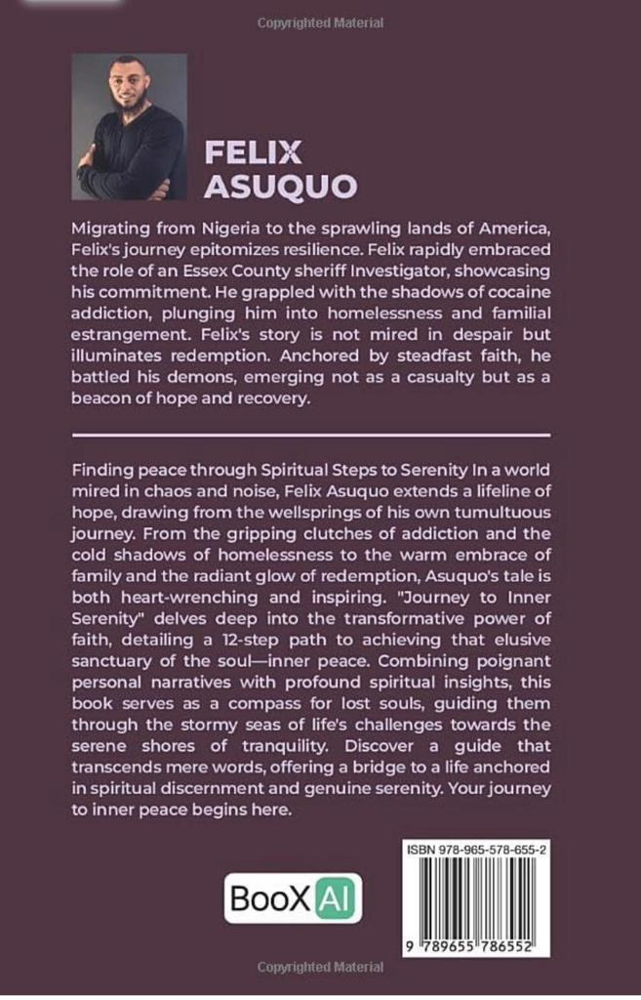

Finding Calm Amidst the Storm: A Guide to Inner Serenity is Felix first publication. "Finding Calm Amidst the Storm" is more than a book; it's a compass guiding the soul through life's storms. Felix lays out a 12-step pathway, intricately weaving spiritual wisdom and practical insights, offering a lantern of hope to those navigating the choppy waters of life. Through his tales of tribulations and triumphs, he underscores the transformative power of faith, resilience, and love in the pursuit of true serenity
